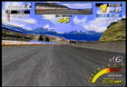
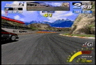
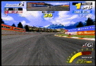
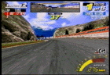
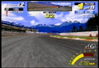

|  |
第１コーナー（右）
アウトいっぱいから大きく切ってインに入り、そのままハンドル角をキープして
多少滑らせながらアウトへ膨らみつつ脱出します。
インへの進入が遅いとコースアウトしますので、その場合は無理せずアクセルを抜いて５速に落とします。 |
|  |
第２コーナー（右）
コーナー侵入時よりも脱出時に気を使います。
コーナー終了直前に、一瞬逆ハンドルを切るような気持ちで切れ角を戻さないとマシンが暴れて回転数が落ちてしまいます。
または素早く小刻みにハンドルを修正してもよいでしょう。 |
|  |
第３コーナー（右）
次のコーナーへのつなぎのため、アウトいっぱいから一瞬アクセルを抜いて進入
し、できるだけ膨らまないようにクリアします。
ここでアウトへ抜けてしまうと次のコーナーを曲がりきれませんので、安全重視なら５速に落としてから進入してもよいでしょう。 |
|  |
第４コーナー（左）
早めに５速に落とし、ハンドルを大きく切ってクリアします。
多少滑らせてもかまいませんが、切り始めが遅いと縁石を越えて壁にぶつかってしまうので、危険を感じたらアクセルを少し抜きましょう。 |
|  |
第５コーナー（右）
６速なら一瞬緩めてからフルアクセルで、５速なら全開で曲がれます。
ただし、シフトチェンジが早すぎるとオーバーパワーでアウト側へ滑っていってしまいます。
その場合はアクセルを抜いて適切な回転数に抑えましょう。 |
 |
第６（最終）コーナー（右）
アウト・ミドル・アウトで、４速ハーフアクセルで抜けます。
ここでインをつきすぎると回転数が落ちますので、タコメーターがオレンジゾーンにとどまるようにアクセルと切り角を調整します。フルアクセルのまま薄くブレーキを踏んでもよいでしょう。
曲がりきれると感じたらアクセルを踏み始め、５速から６速へとシフトアップします。 |